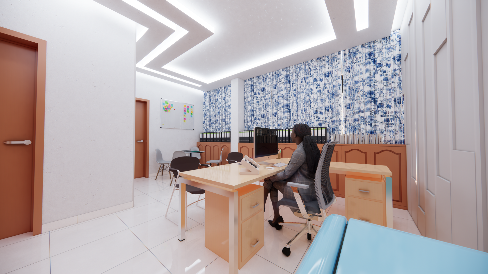
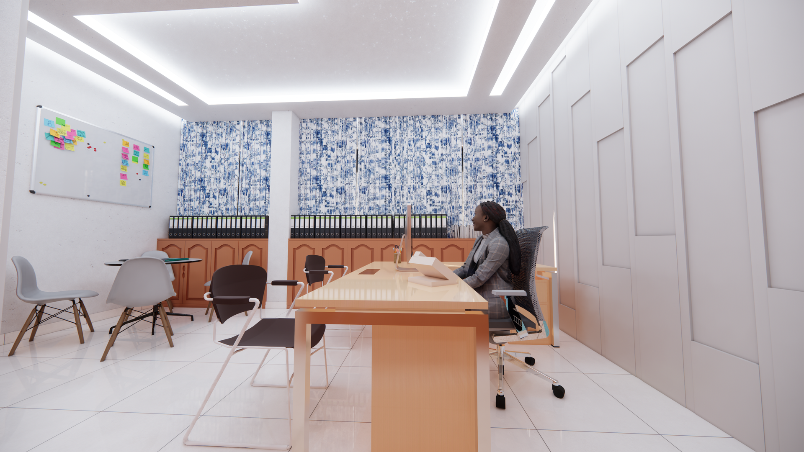
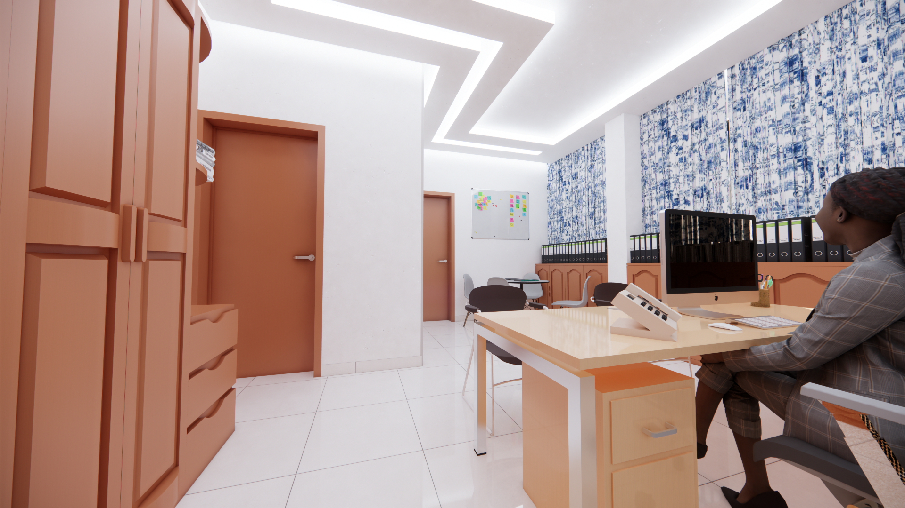

Optimisation pour la Performance IT
L'aménagement des bureaux de la Direction des Systèmes d'Information (DSI) a été conçu pour favoriser la concentration, la collaboration et l'agilité technique. L'espace intègre des plateaux open-space ergonomiques, des salles de réunion connectées et des zones de serveur sécurisées.
Une attention particulière a été portée à l'acoustique et à la gestion des réseaux câblés, invisibles mais omniprésents. Le design utilise une palette de couleurs sobres et technologiques, renforcée par un éclairage LED précis et une signalétique claire.
Projet
Aménagement Tertiaire Spécifique
Client
Direction Technique


